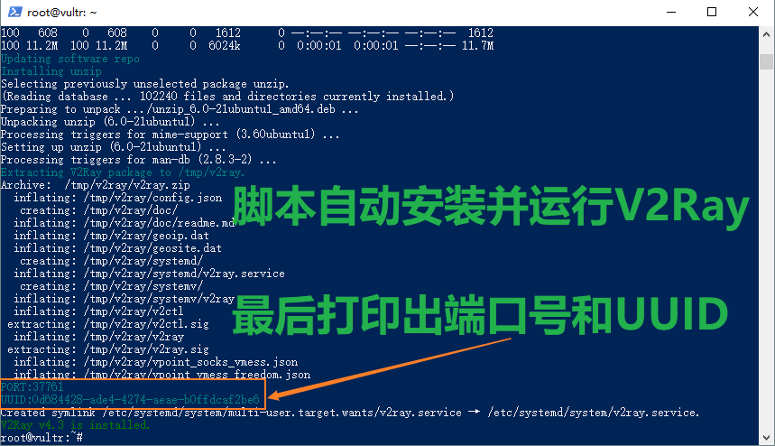
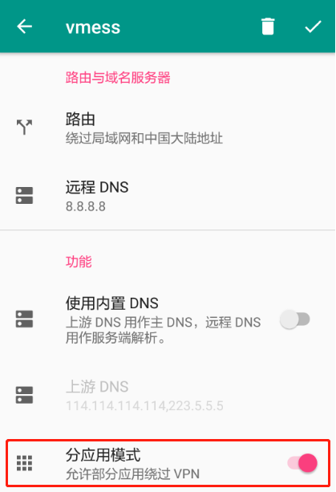
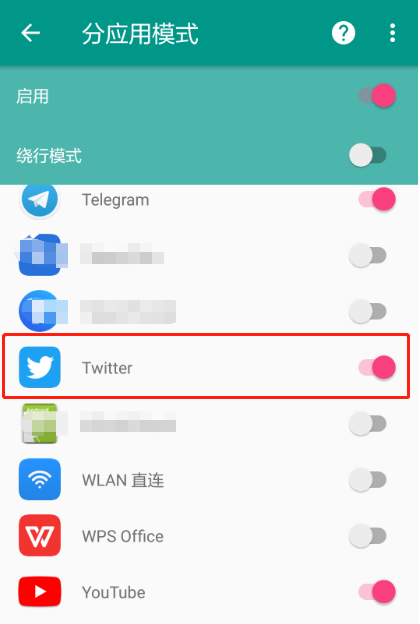
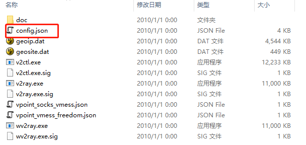
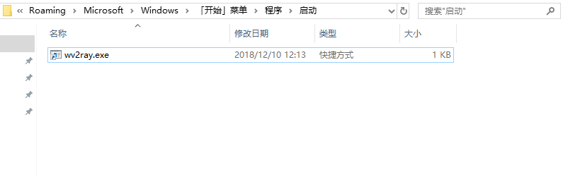
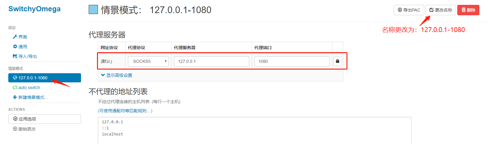
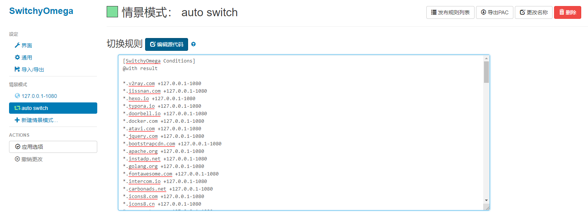
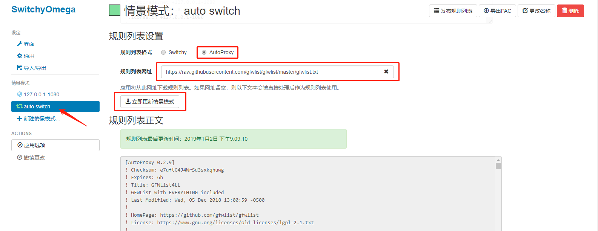

信息更新：2019-10-03
前两天突然发现不能科学上网了，怀疑是shadowsocks的服务（用的是cfb的加密方式）被封禁了，后来网上查了一下，确实如此。所以换成了v2ray的方式，v2ray是目前比较稳定的使用方式，虽然速度不是很快，但能满足基本的需求。就像一个博客上写的，虽然有很多加速的方式，但建议大家不要折腾，能用总比加速之后被封好得多。
为何放弃使用Shadowsocks客户端
其实我最开始接触的翻墙软件是Shadowsocks。一开始从官网下载了Windows 4.1.2客户端版本，用着也挺不错，但后来发现，每次运行Shadowsocks客户端的时候，只要使用Foxmail发邮件，Foxmail必崩。这就让我无法在Windows上同时使用Shadowsocks和Foxmail，但v2ray的及时出现，挽救了这一切~~~
什么是v2ray
在介绍v2ray之前，先说说ProjectV，Project V 是一个工具集合，它可以帮助你打造专属的基础通信网络。Project V 的核心工具称为v2ray，其主要负责网络协议和功能的实现，与其它 Project V 通信。v2ray 可以单独运行，也可以和其它工具配合，以提供简便的操作流程。更多细节请点击 v2ray官网 查阅。
v2ray 和 Shadowsocks的区别
v2ray 更像是一个集成工具，它集合了多种多样的协议（包括 Socks、HTTP、Shadowsocks、VMess 等）和功能，对个人用户而言像是一个工具箱，可以使用各种各样的工具组合。对开发者而言像是一个脚手架，可以在此基础上开发扩充自己需要的功能而节省开发时间。
v2ray的主要特性有：
多入口多出口: 一个 v2ray 进程可并发支持多个入站和出站协议，每个协议可独立工作。
可定制化路由: 入站流量可按配置由不同的出口发出。轻松实现按区域或按域名分流，以达到最优的网络性能。
多协议支持: v2ray 可同时开启多个协议支持，包括 Socks、HTTP、Shadowsocks、VMess 等。每个协议可单独设置传输载体，比如 TCP、mKCP、WebSocket 等。
隐蔽性: v2ray 的节点可以伪装成正常的网站（HTTPS），将其流量与正常的网页流量混淆，以避开第三方干扰。
反向代理: 通用的反向代理支持，可实现内网穿透功能。
多平台支持: 原生支持所有常见平台，如 Windows、Mac OS、Linux，并已有第三方支持移动平台。
安装和使用v2ray
这方面的材料比较多，在此推荐一篇v2ray的安装和使用教程：https://yuan.ga/v2ray-complete-tutorial/ ，请自行查阅。如果您已经搭建好科学上网的服务端，只是单纯想安装和使用v2ray客户端进行科学上网的话，请参阅下一章节的简易教程：基于v2ray搭建客户端代理
为防止上述v2ray的教程被封，下面简单说明下v2ray的服务端搭建方法（基于CentOS 7 64位系统）：
V2Ray 官方维护并提供了适用于大多数主流系统的自动安装脚本，只需一行命令即可完成安装，当你想要更新V2Ray 的时候同样只需要运行下面一行命令。
bash <(curl -L -s https://install.direct/go.sh) |

当你使用脚本自动安装结束后，此时服务端的部署已经完成了，脚本不仅安装了 V2Ray，还在配置中随机生成了一个 5 位数端口以及 UUID 供我们直接使用，所以我们无需进一步配置服务端，这时已经获得了三个必要的信息：IP、端口（Port）、id（UUID）。
安装完成后会新增下列文件：
- /usr/bin/v2ray/v2ctl：V2Ray 工具，用于给程序自身调用
- /usr/bin/v2ray/v2ray：V2Ray 核心程序
- /etc/v2ray/config.json：配置文件
- /usr/bin/v2ray/geoip.dat：IP 数据文件，V2Ray 路由功能时有用，下同
- /usr/bin/v2ray/geosite.dat：域名数据文件
之后就可以使用 systemctl start|restart|stop|status v2ray 查看和控制 V2Ray 的运行。
在Android上安装和使用v2ray客户端
Android上的客户端推荐使用BifrostV，可从Google Play商店中下载。BifrostV的整体布局设计模仿了安卓版Shadowsocks，当你使用过安卓版Shadowsocks，再使用这个软件时就不存在太多障碍了。BifrostV支持 VMess、Shadowsocks、SOCKS 等协议，也就是说上述协议的连接只要一个客户端就可以搞定了。BifrostV中有少量广告（设置中有关闭广告选项，但需要Google Play的支持），希望用户可以理解开发者的劳动成果，包容那点广告或选择捐赠支持开发者。
在使用BifrostV时，有个功能比较实用：首页->点击“+”号->手动设置，在配置页面的最下面有个分应用模式。

开启分应用模式后，可以选择哪些APP走VPN，哪些APP不走VPN。如下图所示，Twitter需要走VPN，那么就把该APP选中；WPS Office不需要走VPN，那么就不用勾选它。

可惜的是，v2ray在iPhone和iPad等iOS设备上，目前还没有官方客户端。不过还是一些第三方APP可以使用的，具体可参考该链接：https://ssr.tools/295 。
在Windows上搭建v2ray客户端代理
此处以Windows10系统为例，讲述如何通过v2ray搭建客户端代理，并使用chrome浏览器科学上网。
安装v2ray客户端
- 通过Github下载v2ray客户端，打开链接：https://github.com/v2ray/v2ray-core/releases ，往下浏览可找到Windows平台的v2ray客户端。如果您的系统是32位的，请选择并下载v2ray-windows-32.zip；如果您的系统是64位的，请选择并下载v2ray-windows-64.zip。
- 下载完毕后，将zip包解压到任意目录下，然后打开解压后的目录，找到config.json文件并打开。

配置config.json
此处分别以vmess和shadowsocks为例，讲述如何配置config.json。
以vmess为例（其中传输协议为TCP）：把当前config.json文件内容清空，将以下内容复制到config.json文件中。
{
"log":{
"loglevel": "warning"
},
"inbounds":[
{
"listen": "127.0.0.1",
"port": 1080,
"protocol": "socks",
"domainOverride": ["tls","http"],
"settings": {
"auth": "noauth",
"udp": true
},
"tag":"instag_1080"
}
],
"outbounds":[
{
"protocol": "vmess",
"settings": {
"vnext": [
{
"address": "替换成你的IP",
"port": 替换成你的端口号,
"users": [
{
"id": "替换成你的UUID",
"level": 1,
"alterId": 修改成你的ID，注意与你在服务端设置的alterId保持一致
}
]
}
]
},
"streamSettings": {
"network": "tcp",
"sockopt": {
"mark": 0,
"tcpFastOpen": true,
"tproxy": "off"
}
},
"mux": {"enabled": false},
"tag": "outstag_1080"
}
],
"routing":{
"domainStrategy": "IPIfNonMatch",
"rules": [
{
"type": "field",
"inboundTag": [
"instag_1080"
],
"outboundTag": "outstag_1080"
}
],
"balancers": []
}
}以shadowsocks为例：把当前config.json文件内容清空，将以下内容复制到config.json文件中。
{
"log":{
"loglevel": "warning"
},
"inbounds":[
{
"listen": "127.0.0.1",
"port": 1080,
"protocol": "socks",
"domainOverride": ["tls","http"],
"settings": {
"auth": "noauth",
"udp": true
},
"tag":"instag_1080"
}
],
"outbounds":[
{
"protocol": "shadowsocks",
"settings": {
"servers": [
{
"address": "替换成你的IP",
"port": 替换成你的端口号,
"method": "替换成你的加密方式",
"password": "替换成你的密码",
"ota": false,
"level": 0
}
]
},
"streamSettings": {},
"mux": {
"enabled": false,
"concurrency": 8
},
"tag":"outstag_1080"
}
],
"routing":{
"domainStrategy": "IPIfNonMatch",
"rules": [
{
"type": "field",
"inboundTag": [
"instag_1080"
],
"outboundTag": "outstag_1080"
}
],
"balancers": []
}
}
运行v2ray客户端
打开v2ray客户端安装目录，双击wv2ray.exe运行即可。
v2ray.exe和wv2ray.exe的区别：前者是以命令行窗口的形式在前台显示，后者则没有窗口。
设置v2ray客户端开机自启动
按下快捷键：Win+R，输入
shell:startup，回车，此时会打开一个文件夹，在这个文件夹里放入的任何程序，都会在开机时自动运行。Windows键(Winkey)，简称“Win键”，是在计算机键盘左下角 Ctrl 和 Alt 键之间的按键，图案是 Microsoft Windows 的视窗图标。 现在大多数运行 Windows 的 PC 键盘上都有这个按键。
打开v2ray客户端安装目录，找到wv2ray.exe，创建它的快捷方式，并将该快捷方式放到上面打开的那个文件夹里。

安装Proxy SwitchyOmega插件
打开chrome浏览器，去Github下载最新版安装包，或直接本地下载文件进行安装。更多信息请访问Proxy SwitchyOmega官网查阅。
在 Chrome 地址栏输入 chrome://extensions 打开扩展程序，拖动 .crx 后缀的 SwitchyOmega 安装文件到扩展程序中进行安装。
配置Chrome浏览器代理模式
- 安装完Proxy SwitchyOmega插件后，会发现chrome浏览器右上方有个小圆圈的标志，点击该小圆圈，单击
选项按钮，进入SwitchyOmega配置界面，参照下图，修改情景模式。

点击
auto switch按钮，单击编辑源代码，然后将里面的内容清空，并将以下内容拷贝进去。[SwitchyOmega Conditions]
@with result
*.v2ray.com +127.0.0.1-1080
*.iissnan.com +127.0.0.1-1080
*.hexo.io +127.0.0.1-1080
*.typora.io +127.0.0.1-1080
*.doorbell.io +127.0.0.1-1080
*.docker.com +127.0.0.1-1080
*.atavi.com +127.0.0.1-1080
*.jquery.com +127.0.0.1-1080
*.bootstrapcdn.com +127.0.0.1-1080
*.apache.org +127.0.0.1-1080
*.instadp.net +127.0.0.1-1080
*.golang.org +127.0.0.1-1080
*.fontawesome.com +127.0.0.1-1080
*.intercom.io +127.0.0.1-1080
*.carbonads.net +127.0.0.1-1080
*.icons8.com +127.0.0.1-1080
*.icons8.cn +127.0.0.1-1080
*.gr-assets.com +127.0.0.1-1080
*.goodreads.com +127.0.0.1-1080
*.bittiger.io +127.0.0.1-1080
*.packagecontrol.io +127.0.0.1-1080
*.sublimetext.com +127.0.0.1-1080
*.margo.sh +127.0.0.1-1080
*.color-themes.com +127.0.0.1-1080
*.pocketgophers.com +127.0.0.1-1080
*.contentful.com +127.0.0.1-1080
*.userstyles.org +127.0.0.1-1080
*.scrimba.com +127.0.0.1-1080
*.heroku.com +127.0.0.1-1080
*.cloudflare.com +127.0.0.1-1080
*.gitbooks.io +127.0.0.1-1080
*.autopilothq.com +127.0.0.1-1080
*.evgnet.com +127.0.0.1-1080
*.godoc.org +127.0.0.1-1080
*.travis-ci.org +127.0.0.1-1080
*.apple.com +127.0.0.1-1080
*.herokuapp.com +127.0.0.1-1080
*.twimg.com +127.0.0.1-1080
*.redis.io +127.0.0.1-1080
*.mozilla.net +127.0.0.1-1080
*.mozilla.org +127.0.0.1-1080
*.swagger.io +127.0.0.1-1080
*.adguard.com +127.0.0.1-1080
*.visual-paradigm.com +127.0.0.1-1080
*.*.github.io +127.0.0.1-1080
*.stackoverflow.com +127.0.0.1-1080
*.javaworld.com +127.0.0.1-1080
*.russellluo.com +127.0.0.1-1080
*.golangprograms.com +127.0.0.1-1080
*.forestapp.cc +127.0.0.1-1080
*.kotlinlang.org +127.0.0.1-1080
*.kotl.in +127.0.0.1-1080
*.tampermonkey.net +127.0.0.1-1080
*.zdassets.com +127.0.0.1-1080
*.zendesk.tv +127.0.0.1-1080
*.evernote.com +127.0.0.1-1080
*.uptodown.com +127.0.0.1-1080
*.yandex.ru +127.0.0.1-1080
*.yastatic.net +127.0.0.1-1080
*.jshell.net +127.0.0.1-1080
*.usesfathom.com +127.0.0.1-1080
*.jsfiddle.net +127.0.0.1-1080
*.segment.com +127.0.0.1-1080
*.atlassian.com +127.0.0.1-1080
*.bitbucket.org +127.0.0.1-1080
*.staticfile.org +127.0.0.1-1080
*.go-zh.org +127.0.0.1-1080
*.molunerfinn.com +127.0.0.1-1080
*.explainshell.com +127.0.0.1-1080
*.ipfs.io +127.0.0.1-1080
*.yastatic.com +127.0.0.1-1080
*.yandex.com +127.0.0.1-1080
*.cryptokitties.co +127.0.0.1-1080
*.myeoskit.com +127.0.0.1-1080
*.pixelmaster.io +127.0.0.1-1080
*.steemit.com +127.0.0.1-1080
*.okex.com +127.0.0.1-1080
*.eos.io +127.0.0.1-1080
*.douban.com +127.0.0.1-1080
*.xclient.info +127.0.0.1-1080
*.golangweekly.com +127.0.0.1-1080
*.awsstatic.com +127.0.0.1-1080
*.amazon.com +127.0.0.1-1080
*.amazonaws.com +127.0.0.1-1080
*.greasyfork.org +127.0.0.1-1080
*.openuserjs.org +127.0.0.1-1080
*.basicattentiontoken.org +127.0.0.1-1080
*.adex.network +127.0.0.1-1080
*.gitbook.io +127.0.0.1-1080
*.github.com +127.0.0.1-1080
*.skyao.io +127.0.0.1-1080
*.readthedocs.io +127.0.0.1-1080
*.gobyexample.com +127.0.0.1-1080
*.go-database-sql.org +127.0.0.1-1080
*.t.co +127.0.0.1-1080
*.sourcegraph.com +127.0.0.1-1080
*.linkerd.io +127.0.0.1-1080
*.staruml.io +127.0.0.1-1080
*.jfrog.com +127.0.0.1-1080
*.google.com +127.0.0.1-1080
*.time.graphics +127.0.0.1-1080
*.zupzup.org +127.0.0.1-1080
*.blockchain.com +127.0.0.1-1080
*.discord.gg +127.0.0.1-1080
*.colobu.com +127.0.0.1-1080
*.technologyreview.com +127.0.0.1-1080
*.jianshu.com +127.0.0.1-1080
*.gowalker.org +127.0.0.1-1080
*.hashingit.com +127.0.0.1-1080
*.unic.ac.cy +127.0.0.1-1080
*.cloudfront.net +127.0.0.1-1080
*.coursera.org +127.0.0.1-1080
*.quoracdn.net +127.0.0.1-1080
*.quora.com +127.0.0.1-1080
*.medium.com +127.0.0.1-1080
*.ipictheaters.com +127.0.0.1-1080
*.101blockchains.com +127.0.0.1-1080
*.michelsen.dk +127.0.0.1-1080
*.launchd.info +127.0.0.1-1080
*.jetbrains.com +127.0.0.1-1080
*.wireshark.org +127.0.0.1-1080
*.gomods.io +127.0.0.1-1080
*.bootcss.com +127.0.0.1-1080
*.githubusercontent.com +127.0.0.1-1080
* +direct拷贝完成后，其效果应如下图所示：

在当前页面下，点击下方
添加规则列表按钮，选择AutoProxy，并输入规则列表网址：https://raw.githubusercontent.com/gfwlist/gfwlist/master/gfwlist.txt，点击立即更新情景模式，等待规则列表更新，最后单击左侧的应用选项按钮。最终其效果应如下图所示：
此时，在chrome浏览器中输入：www.google.com ，发现谷歌可以正常访问了。